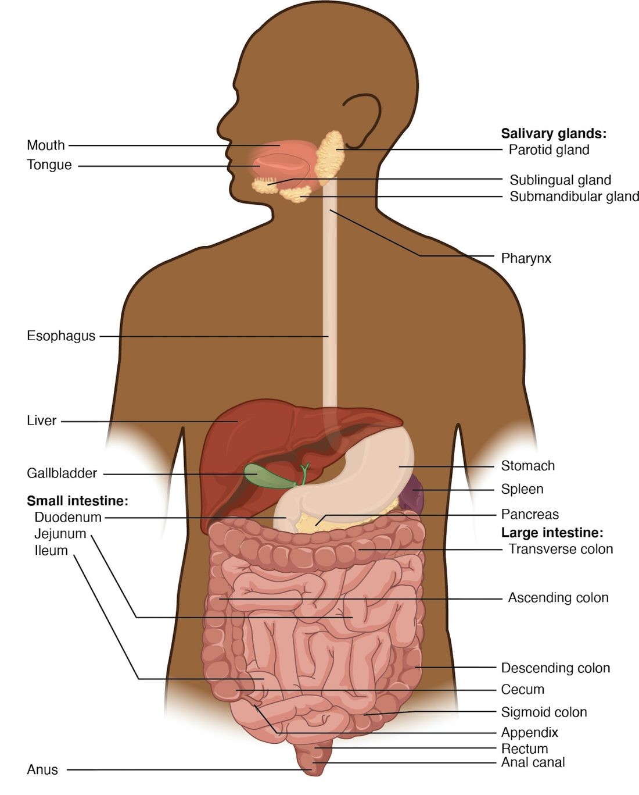

Organization and regulation of the digestive system
1Why this matters
Mr. Okafor, 58, had part of his intestine removed yesterday. Today his abdomen is swollen and quiet: through a stethoscope the nurse hears none of the usual gurgles, and he cannot keep water down. His surgeon is not surprised. Handling the intestine and the opioid pain medicine have both quieted the nerve network in the gut wall that drives its muscle. By the third day the gurgles return, he passes gas, and he is allowed to eat. This topic explains the tube, the muscle and the nerves he was waiting on.
2What this builds on
3Quick check before you start
1. Which layer of a serous membrane lies directly on the surface of an organ?
- The parietal layer
- The visceral layer
- The fibrous layer
Show the answer
The visceral layer covers the organ itself; the parietal layer lines the wall of the cavity. The thin space between them holds serous fluid.
- The parietal layer:
- Correct: The visceral layer:
- The fibrous layer:
2. Which kind of muscle tissue lines the walls of hollow organs such as blood vessels and the gut, and contracts without conscious control?
- Skeletal muscle
- Cardiac muscle
- Smooth muscle
Show the answer
Smooth muscle forms the walls of hollow organs. It is involuntary and is controlled by the autonomic nervous system, hormones and local signals.
- Skeletal muscle:
- Cardiac muscle:
- Correct: Smooth muscle:
3. After a large meal, parasympathetic activity dominates. What happens to movement and secretion in the stomach and intestines?
- Both increase
- Both decrease
- Movement increases but secretion decreases
Show the answer
The rest-and-digest pattern increases both gut movement and gut secretion; sympathetic activity reduces both.
- Correct: Both increase:
- Both decrease:
- Movement increases but secretion decreases:
4Anatomy

With labels hidden, select a box to reveal its label.
5How it works, step by step
- A mouthful of food stretches a short length of the gut wall.Sensory neurons of the enteric nervous system in the wall detect the stretch and excite enteric interneurons.
- The interneurons signal enteric motor neurons on both sides of the stretched spot.Behind the food, excitatory motor neurons release acetylcholine; ahead of it, inhibitory motor neurons release nitric oxide.
- Acetylcholine contracts the circular muscle behind the food while nitric oxide relaxes the circular muscle ahead of it.The tube narrows behind the food and widens in front, so the food is pushed forward.
- The food now stretches the next length of wall.The same short reflex fires there, so the contraction travels along the tube as a peristaltic wave.
- Parasympathetic fibers in the vagus nerve excite the enteric neurons, and sympathetic fibers inhibit them.Peristalsis becomes stronger and more frequent after a meal and weaker during stress, while the ENS still runs the pattern itself.
6Core concepts
7A common mistake
The wrong idea: The brain drives the movements of the gut, so cutting the gut's nerve supply stops digestion.
What actually happens: The enteric nervous system in the gut wall runs peristalsis, segmentation and secretion by itself through short reflexes. A length of intestine removed from the body still pushes its contents along. The vagus and sympathetic nerves only turn this activity up or down. What stops the gut after surgery is not loss of the brain's commands but inhibition of the enteric neurons and muscle by handling, inflammation, sympathetic activity and opioids.
8Check yourself
Anything you miss goes into your review queue.
1. Select every example of mechanical digestion.
- Your molars grinding a peanut
- An enzyme in saliva splitting starch into sugars
- The stomach wall churning its contents
- Rings of intestinal muscle chopping and remixing the contents
- Glucose crossing the intestinal lining into the blood
- Protein being split into amino acids
Show the answer
Mechanical digestion makes pieces smaller and mixes them without breaking chemical bonds: chewing, churning and segmentation. Enzymes splitting molecules is chemical digestion, and glucose crossing the lining is absorption.
- Correct: Your molars grinding a peanut: Correct. Grinding breaks the peanut into smaller pieces without changing its molecules.
- An enzyme in saliva splitting starch into sugars: Splitting starch breaks chemical bonds by hydrolysis, so this is chemical digestion.
- Correct: The stomach wall churning its contents: Correct. Churning breaks up and mixes food physically.
- Correct: Rings of intestinal muscle chopping and remixing the contents: Correct. This is segmentation, a mixing movement of the wall.
- Glucose crossing the intestinal lining into the blood: Moving a nutrient across the lining into the blood is absorption, not digestion.
- Protein being split into amino acids: Breaking peptide bonds is chemical digestion, done by enzymes.
2. Put the parts of the small intestine's wall in order, from the lumen outward.
- Simple columnar epithelium
- Lamina propria
- Submucosa
- Circular layer of smooth muscle
- Longitudinal layer of smooth muscle
- Serosa (visceral peritoneum)
Show the answer
The mucosa comes first: the epithelium, then the lamina propria beneath it (with the thin muscularis mucosae at its base). Next is the submucosa, then the muscularis externa with its inner circular and outer longitudinal layers, and finally the serosa.
- Correct order: 1. Simple columnar epithelium 2. Lamina propria 3. Submucosa 4. Circular layer of smooth muscle 5. Longitudinal layer of smooth muscle 6. Serosa (visceral peritoneum)
3. This pathway describes one peristaltic wave. Which step is wrong?
- Food stretches a short length of the wall
- Enteric sensory neurons detect the stretch
- Circular muscle behind the food contracts
- Circular muscle ahead of the food also contracts, gripping it
- The food is pushed forward and stretches the next length of wall
Show the answer
Ahead of the food, inhibitory enteric neurons release nitric oxide, which relaxes the circular muscle and widens the tube. If the muscle ahead contracted too, the food would be squeezed from both sides and could not move.
- Food stretches a short length of the wall: This step is right. Distension of the wall is the stimulus that starts the reflex.
- Enteric sensory neurons detect the stretch: This step is right. Stretch-sensitive enteric sensory neurons start the short reflex.
- Circular muscle behind the food contracts: This step is right. Excitatory motor neurons release acetylcholine behind the food.
- Correct: Circular muscle ahead of the food also contracts, gripping it: This is the error. The muscle ahead relaxes; the narrowing behind and widening ahead together push the food forward.
- The food is pushed forward and stretches the next length of wall: This step is right. The new stretch repeats the reflex, so the wave travels along the tube.
4. A newborn has not passed stool, and his abdomen is swelling. A biopsy shows that the last stretch of his large intestine has no enteric neurons in its wall; the intestine above it is normal. The segment without neurons is narrow and tightly contracted. Why does this segment block the passage of stool?
- Its muscle has no nerve input, so it is paralyzed and floppy
- Its mucosa cannot absorb water, so stool becomes too large to pass
- Its sympathetic fibers are missing, so its sphincters stay open
- Its circular muscle cannot relax, so no peristaltic wave can pass
Show the answer
Peristalsis needs relaxation ahead of the contents, and that relaxation comes from enteric inhibitory neurons releasing nitric oxide. Without them the smooth muscle stays contracted, the segment stays narrow, and no wave can pass through it. The normal intestine above it fills and swells. This condition is called Hirschsprung disease.
- Its muscle has no nerve input, so it is paralyzed and floppy: The segment is narrow and contracted, not floppy. Smooth muscle has its own tone; what the missing neurons remove is the signal that relaxes it.
- Its mucosa cannot absorb water, so stool becomes too large to pass: The problem is movement, not absorption. The block is in the muscle wall, and stool never reaches the segment's lining in quantity.
- Its sympathetic fibers are missing, so its sphincters stay open: Sympathetic fibers tighten sphincters rather than open them, and the biopsy showed missing enteric neurons, not missing sympathetic fibers.
- Correct: Its circular muscle cannot relax, so no peristaltic wave can pass: Correct. Without inhibitory enteric neurons, the muscle cannot relax, so the segment acts as a fixed narrowing.
5. A fatty, acidic mixture from the stomach enters the first part of the small intestine. Predict the change in each variable over the next few minutes.
| Variable | Change |
|---|---|
| Secretin in the blood | — |
| Cholecystokinin (CCK) in the blood | — |
| Bicarbonate-rich fluid from the pancreas | — |
| Contraction of the gallbladder | — |
| Rate of stomach emptying | — |
Show the answer
Acid releases secretin and fat releases CCK. Secretin brings in bicarbonate to neutralize the acid; CCK brings in bile and pancreatic enzymes to digest the fat. Both hold back the stomach, so the intestine receives new material only as fast as it can process it.
- Secretin in the blood: up. Acid arriving in the first part of the small intestine releases secretin.
- Cholecystokinin (CCK) in the blood: up. Fats and protein fragments in the first part of the small intestine release CCK.
- Bicarbonate-rich fluid from the pancreas: up. Secretin acts on the pancreas and the ducts that carry bile to release a watery bicarbonate-rich fluid.
- Contraction of the gallbladder: up. CCK contracts the gallbladder's smooth muscle, pushing bile into the intestine.
- Rate of stomach emptying: down. Both secretin and CCK slow stomach emptying, so less arrives until the intestine has handled what it has.
6. Fill the gap: Acid from the stomach enters the first part of the small intestine → ______ → the pancreas and the ducts that carry bile release bicarbonate-rich fluid → the acid is neutralized → the stimulus is removed
- Gastrin is released into the blood
- Motilin is released into the blood
- Secretin is released into the blood
- The myenteric plexus stops all contractions
Show the answer
Acid in the first part of the small intestine releases secretin, which makes the pancreas and the ducts that carry bile secrete bicarbonate. Once the acid is neutralized, secretin release falls: a negative feedback loop.
- Gastrin is released into the blood: Gastrin comes from the stomach and raises stomach acid secretion, which would add to the acid rather than neutralize it.
- Motilin is released into the blood: Motilin is released between meals and triggers housekeeping contractions; it does not control bicarbonate secretion.
- Correct: Secretin is released into the blood: Correct. Secretin is the hormone released by acid in the intestine, and its main target is the bicarbonate secretion of the pancreas.
- The myenteric plexus stops all contractions: The myenteric plexus controls muscle, not the pancreas, and stopping all contractions would not neutralize acid.
7. In a laboratory, a length of guinea pig intestine is placed in warm, oxygenated salt solution with no nerves connecting it to the brain or spinal cord. A small pellet is put in one end. What happens to the pellet?
- It stays put until vagal signals are supplied to the muscle
- Peristalsis run by the wall's own neurons pushes it along
- It moves only after epinephrine is added to the solution
- It is squeezed by the whole length contracting at once
Show the answer
The pellet stretches the wall and triggers the peristaltic short reflex through the myenteric plexus, which is entirely within the wall. The intestine propels the pellet with no connection to the central nervous system.
- It stays put until vagal signals are supplied to the muscle: The vagus nerve adjusts gut activity but does not start it. The enteric nervous system can run peristalsis with no outside input.
- Correct: Peristalsis run by the wall's own neurons pushes it along: Correct. The ENS contains sensory neurons, interneurons and motor neurons, so the whole reflex can run inside the wall.
- It moves only after epinephrine is added to the solution: Sympathetic signals and epinephrine inhibit gut motility; they do not start peristalsis.
- It is squeezed by the whole length contracting at once: Gap junctions spread contraction locally, but enteric neurons shape it into a wave with relaxation ahead. The whole length does not contract at once.
9Summary
The alimentary canal (GI tract) is one tube from mouth to anus: mouth, pharynx, esophagus, stomach, small intestine and large intestine. The accessory organs (teeth, tongue, glands that make saliva, liver, gallbladder, pancreas) work from outside it. Food undergoes ingestion, propulsion, mechanical digestion, chemical digestion, absorption and defecation. The wall has four layers: mucosa, submucosa, muscularis externa (inner circular and outer longitudinal smooth muscle) and serosa. Peristalsis moves contents forward and segmentation mixes them. The enteric nervous system (myenteric and submucosal plexuses) runs these movements and secretions through short reflexes; long reflexes through the brainstem and spinal cord, and the autonomic nerves, adjust it. Gastrin, secretin, CCK and motilin coordinate the organs through the blood. The peritoneum lines the cavity and wraps the organs; mesenteries and the omenta hold the gut and carry its vessels, and retroperitoneal organs such as the pancreas and kidneys lie behind it.